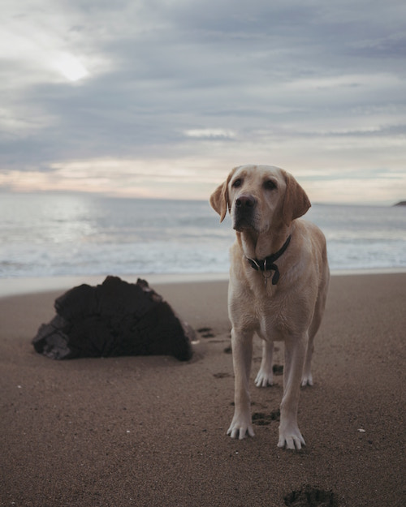

All About Megan
My Family
I am an only child. My mom works at this company called VSP, which stands for Vision Service Plan. My dad stays at home but umpires at night and sometimes during the day. I have only known my grandma on my dad's side because all of the others died before I was born. Both of my grandpas' are veterans and they both worked on the space shuttle. On my mom’s side I am part Czechoslovakian and a few other races. On my dad’s side I am part French and Canadian and other races. I have two dogs; one is a yellow labrador retriever, and the other is a light brown pit mix. The yellow lab’s Rosco and the pit/lab mix’s name is Moose.
 Conner Murphy